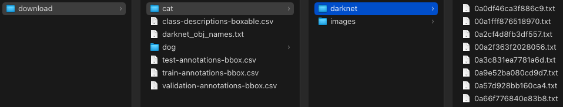
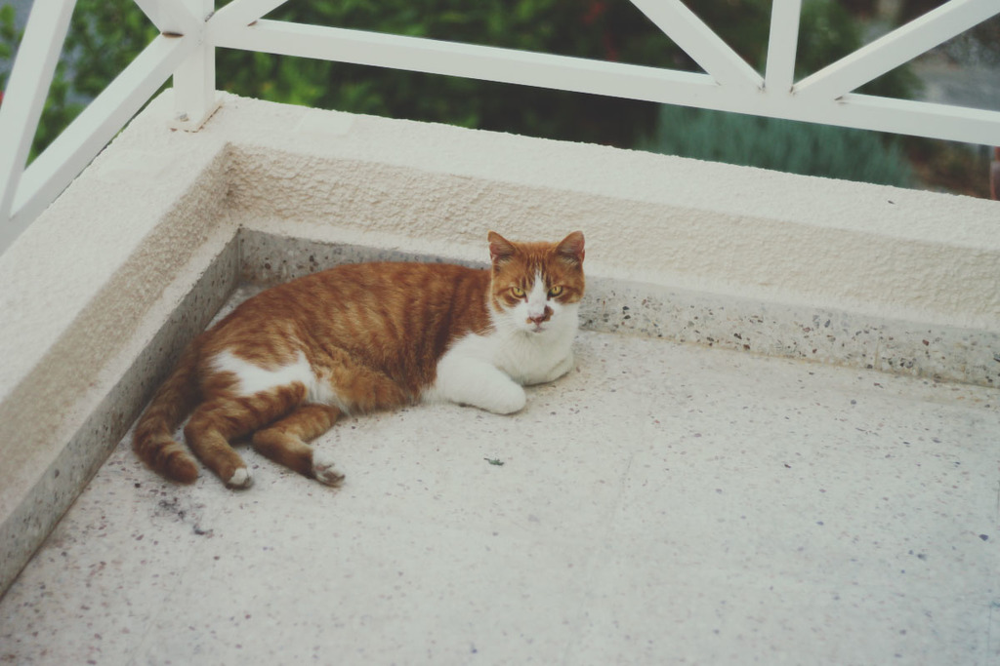
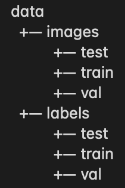
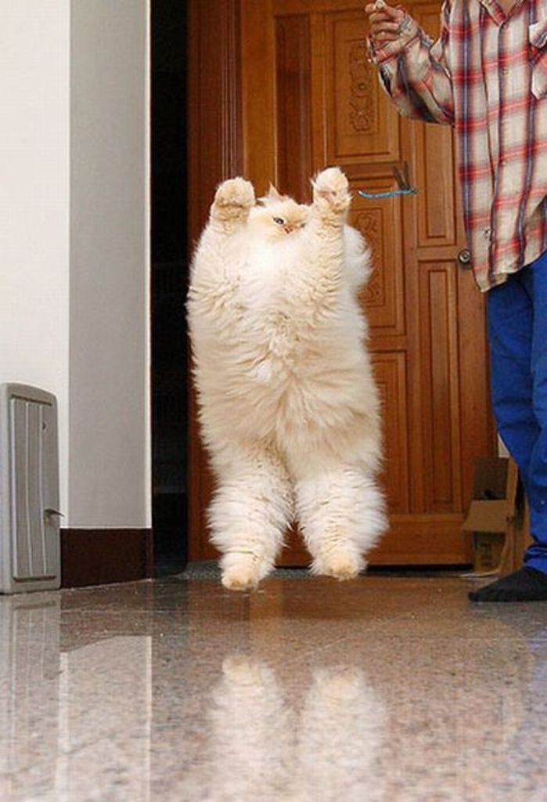
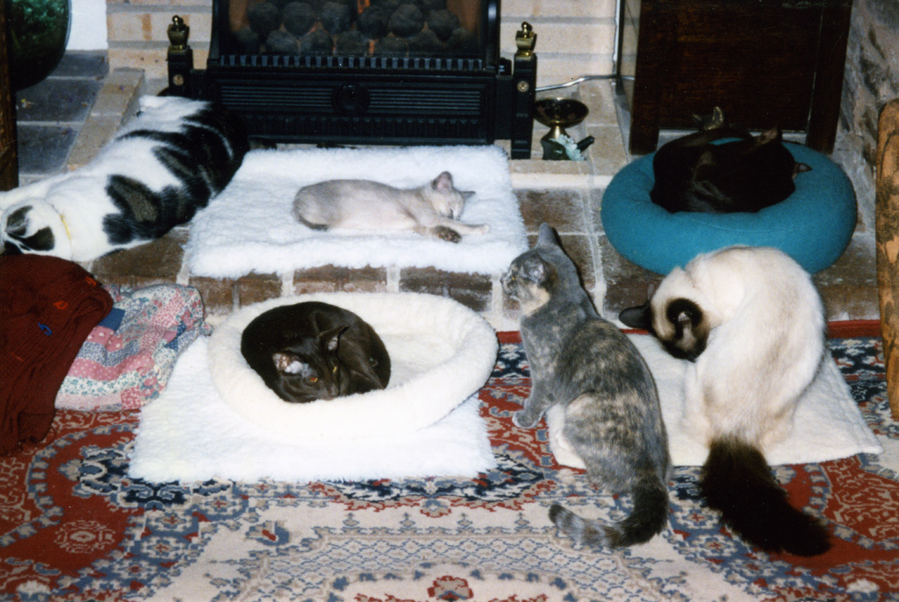
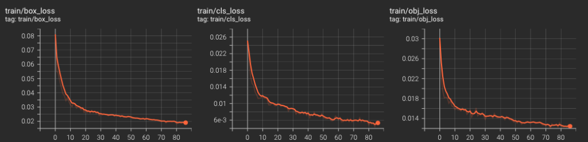
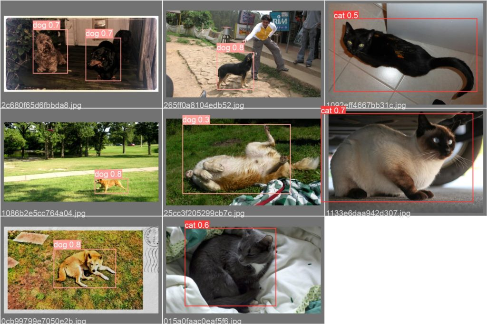

YOLOv5 Transfer Learning
In Simple Steps Without Losing Your Mind

In the previous article, we used YOLOv5 to perform object detection on sample images. In this article, we’ll perform transfer learning to adjust YOLOv5 to cat and dog images from Google’s open images. It is easy to do as transfer learning is well-integrated into the Ultralytics’ implementation. The hardest part is preparing image data for YOLOv5 transfer learning, but we’ll tackle it step by step.
1 Python Environment Setup
We’ll use venv to set up a Python environment as below.
# Create a project folder and move there
mkdir yolov5-transfer-learning
cd yolov5-transfer-learning
# Create and activate a Python environment using venv
python3 -m venv venv
source venv/bin/activate
# We should always upgrade pip as it's usually old version
# that has older information about libraries
pip install --upgrade pipNext, download cat and dog images from Google’s open images.
2 Open Image Download
First, we install the open images library to download dog and cat images from the open images.
pip install openimagesNext, we download 500 cat images and 500 dog images (a total of 1,000 images):
oi_download_dataset --base_dir download --csv_dir download --labels Cat Dog --format darknet --limit 500It takes a while to download images, so be patient. It will create a folder structure like the one below:

We specified the darknet format (–format darknet), which YOLO can handle. There are cat and dog folders. For each, we have darknet and image folders.
- The darknet folder contains label data.
- The images folder contains input images.
For example, below is a cat image from cat/images/0a0df46ca3f886c9.jpg.

The corresponding label file cat/darknet/0a0df46ca3f886c9.txt contains the below data:
0 0.35750000000000004 0.53875 0.463334 0.39499999999999996There are five numbers per line. Each line is for one object (class and bounding box). This image contains only one cat image, so there is only one line. The first number indicates the class where 0 means cat and 1 means dog.
We can see the definition of class number in the darknet_obj_names.txt file:
cat
dogThe cat class is 0, and the dog class is 1, by row index.
The following four numbers in the label file are for the bounding box for the cat (x-center, y-center, width, height). It scales from 0 to 1 relative to the image size. We can draw the bounding box using the following code.
We convert the coordinates from the center position with width and height into top-left and bottom-right positions.
from PIL import Image, ImageDraw
def show_bbox(image_path):
# convert image path to label path
label_path = image_path.replace('/images/', '/darknet/')
label_path = label_path.replace('.jpg', '.txt')
# Open the image and create ImageDraw object for drawing
image = Image.open(image_path)
draw = ImageDraw.Draw(image)
with open(label_path, 'r') as f:
for line in f.readlines():
# Split the line into five values
label, x, y, w, h = line.split(' ')
# Convert string into float
x = float(x)
y = float(y)
w = float(w)
h = float(h)
# Convert center position, width, height into
# top-left and bottom-right coordinates
W, H = image.size
x1 = (x - w/2) * W
y1 = (y - h/2) * H
x2 = (x + w/2) * W
y2 = (y + h/2) * H
# Draw the bounding box with red lines
draw.rectangle((x1, y1, x2, y2),
outline=(255, 0, 0), # Red in RGB
width=5) # Line width
image.show()
show_bbox('data/images/train/0a0df46ca3f886c9.jpg')Below is the resulting image.
Next, we’ll reorganize images and label files into a new folder structure to train YOLOv5.
3 YOLOv5 Transfer Learning Folder Setup
YOLOv5 assumes images and labels are available in the following folder structure:

We’ll use the following code to create such folders.
import os
# Create a folder structure for YOLOv5 training
if not os.path.exists('data'):
for folder in ['images', 'labels']:
for split in ['train', 'val', 'test']:
os.makedirs(f'data/{folder}/{split}')Before copying the files into this folder structure, we will check for duplicated image/label file names.
3.1 Duplicated Image and Label File Names
Since we will copy dog and cat files into the same folders (train, val, test), we should check for duplicate file names.
import glob
def get_filenames(folder):
filenames = set()
for path in glob.glob(os.path.join(folder, '*.jpg')):
# Extract the filename
filename = os.path.split(path)[-1]
filenames.add(filename)
return filenames
# Dog and cat image filename sets
dog_images = get_filenames('download/dog/images')
cat_images = get_filenames('download/cat/images')We can check the intersection of the two image filename sets.
# Check for duplicates
duplicates = dog_images & cat_images
print(duplicates)The output shows three files having the same filename between the dog and cat folders.
{'0dcd8cc4b35a93b4.jpg', '0838125199f2caa7.jpg', '1417eccd5854e04a.jpg'}Let’s take a look at them.
from PIL import Image
# Show the images from the duplicated filenames
for file in duplicates:
for animal in ['cat', 'dog']:
Image.open(f'download/{animal}/images/{file}').show()We can see the below images in the dog folder are the same images from the cat folder.


So, the dog folder contains three cats for an unknown reason. Let’s eliminate them.
dog_images -= duplicates
print(len(dog_images))It says 497. So, we eliminated the three cat images from the dog image filename set. We can copy image/label files into the new folder structure.
3.2 Split Image and Label Files into Train, Val, and Test Sets
We will split images and label files into train, val, and test sets by copying them into respective folders. We’ll shuffle them first.
import numpy as np
dog_images = np.array(list(dog_images))
cat_images = np.array(list(cat_images))
# Use the same random seed for reproducability
np.random.seed(42)
np.random.shuffle(dog_images)
np.random.shuffle(cat_images)The below code is a bit lengthy, but all it does is copy images and label files to the respective folders given train_size and val_size.
import shutil
def split_dataset(animal, image_names, train_size, val_size):
for i, image_name in enumerate(image_names):
# Label filename
label_name = image_name.replace('.jpg', '.txt')
# Split into train, val, or test
if i < train_size:
split = 'train'
elif i < train_size + val_size:
split = 'val'
else:
split = 'test'
# Source paths
source_image_path = f'download/{animal}/images/{image_name}'
source_label_path = f'download/{animal}/darknet/{label_name}'
# Destination paths
target_image_folder = f'data/images/{split}'
target_label_folder = f'data/labels/{split}'
# Copy files
shutil.copy(source_image_path, target_image_folder)
shutil.copy(source_label_path, target_label_folder)
# Cat data
split_dataset('cat', cat_images, train_size=400, val_size=50)
# Dog data (reduce the number by 1 for each set due to three duplicates)
split_dataset('dog', dog_images, train_size=399, val_size=49)We have prepared datasets for YOLOv5 training. Next, we’ll prepare a config file and other things for YOLOv5 transfer learning.
4 YOLOv5 Transfer Learning Preparation
First, we clone the YOLOv5 repository and install the required library. Make sure you are still in the activated venv environment. Under the yolov5-transfer-learning folder, execute the following:
git clone https://github.com/ultralytics/yolov5
pip install -U -r yolov5/requirements.txtNote: at the time of this writing, the latest PyTorch causes an error when the YOLOv5 training finishes. The error says:
AttributeError: 'NoneType' object has no attribute '_free_weak_ref'The details are available here. If you encounter the error, a workaround is to downgrade PyTorch as below:
# If you need to downgrade, you can try this after installing YOLOv5
pip install torch==1.10.1 torchvision==0.11.2We create a YAML file to specify the paths to datasets and class definitions for YOLOv5 under the yolov5-transfer-learning folder and save it as cats_and_dogs.yaml.
# Dataset paths relative to the yolov5 folder
train: ../data/images/train
val: ../data/images/val
test: ../data/images/test
# Number of classes
nc: 2
# Class names 0 - cat, 1 - dog
names: ['cat', 'dog']We are almost ready to train YOLOv5. Next, we need to freeze the backbone.
4.1 Freeze the YOLOv5 Backbone
The backbone means the layers that extract input image features. We will freeze the backbone so the weights in the backbone layers will not change during YOLOv5 transfer learning. We will only train the last layers (i.e., head layers). As we will use the smallest model (yolov5s), we need to find out which layers are the backbone. Let’s open yolov5/models/yolov5s.yaml to see the model structure:
# YOLOv5 🚀 by Ultralytics, GPL-3.0 license
# Parameters
nc: 80 # number of classes
depth_multiple: 0.33 # model depth multiple
width_multiple: 0.50 # layer channel multiple
anchors:
- [10,13, 16,30, 33,23] # P3/8
- [30,61, 62,45, 59,119] # P4/16
- [116,90, 156,198, 373,326] # P5/32
# YOLOv5 v6.0 backbone
backbone:
# [from, number, module, args]
[[-1, 1, Conv, [64, 6, 2, 2]], # 0-P1/2
[-1, 1, Conv, [128, 3, 2]], # 1-P2/4
[-1, 3, C3, [128]],
[-1, 1, Conv, [256, 3, 2]], # 3-P3/8
[-1, 6, C3, [256]],
[-1, 1, Conv, [512, 3, 2]], # 5-P4/16
[-1, 9, C3, [512]],
[-1, 1, Conv, [1024, 3, 2]], # 7-P5/32
[-1, 3, C3, [1024]],
[-1, 1, SPPF, [1024, 5]], # 9
]
# YOLOv5 v6.0 head
head:
[[-1, 1, Conv, [512, 1, 1]],
[-1, 1, nn.Upsample, [None, 2, 'nearest']],
[[-1, 6], 1, Concat, [1]], # cat backbone P4
[-1, 3, C3, [512, False]], # 13
[-1, 1, Conv, [256, 1, 1]],
[-1, 1, nn.Upsample, [None, 2, 'nearest']],
[[-1, 4], 1, Concat, [1]], # cat backbone P3
[-1, 3, C3, [256, False]], # 17 (P3/8-small)
[-1, 1, Conv, [256, 3, 2]],
[[-1, 14], 1, Concat, [1]], # cat head P4
[-1, 3, C3, [512, False]], # 20 (P4/16-medium)
[-1, 1, Conv, [512, 3, 2]],
[[-1, 10], 1, Concat, [1]], # cat head P5
[-1, 3, C3, [1024, False]], # 23 (P5/32-large)
[[17, 20, 23], 1, Detect, [nc, anchors]], # Detect(P3, P4, P5)
]If you see the backbone section, there are ten layers. So, we need to freeze the first ten layers.
5 YOLOv5 Transfer Learning Execution
All you need to do is execute the following under the yolov5-transfer-learning folder.
python yolov5/train.py --data cats_and_dogs.yaml --weights yolov5s.pt --epochs 100 --batch 4 --freeze 10- –data the dataset definition YAML file
- –weights the pre-trained YOLOv5 model weights (We use the smallest model)
- –epochs the number of epochs (100 may be more than enough for just two classes)
- –batch the batch size (Please adjust it as per your machine spec)
- –freeze the number of layers to freeze
The minimum set of parameters above is probably not the best. The train.py script has many more parameters to tweak, so I encourage anyone to look at the script and play with the parameters.
5.1 Monitor Training with Tensorboard
We can open another terminal and source the venv environment to open the Tensorboard as follows:
tensorboard --logdir yolov5/runs/Open localhost:6006 in your web browser to see the loss curves and other charts.

- box_loss: location loss based on IoU
- cls_loss: classification loss based on binary cross-entropy for each class (dog and cat)
- obj_loss: objectness loss based on how confident there is an object in each bounding box
IoU means Intersection over Union between predicted and true bounding boxes. The location loss is an average (1 - IoU) where small intersections mean a larger loss value.
5.2 Model Performance Evaluation
The training process saves images in runs/train/exp/weights folder.

Also, two model weight files will be under the runs/train/exp/weights folder.
best.ptthe best-performing modellast.ptthe last epoch model
The exp in runs/train/exp/weights stands for experiment. If you run more experiments, there will be new folders like exp2, exp3, etc. The train.py automatically evaluates the best model and prints the results:
Class Images Labels P R mAP@.5 mAP@.5:.95:
all 99 113 0.714 0.814 0.811 0.584
cat 99 56 0.746 0.839 0.845 0.613
dog 99 57 0.682 0.789 0.777 0.555
Speed: 3.3ms pre-process, 303.2ms inference, 0.4ms NMS per image at shape (32, 3, 640, 640)- P - Precision
- R - Recall
- mAP - mean Average Precision
We can also manually evaluate the model performance with the following command:
python yolov5/val.py --data cats_and_dogs.yaml --weights yolov5/runs/train/exp/weights/best.pt6 Source Code For Data Preparation
import glob
import os
import numpy as np
import shutil
from PIL import Image
#------------------------------------------------------------
# Create a folder structure for YOLOv5 training
#------------------------------------------------------------
if not os.path.exists('data'):
for folder in ['images', 'labels']:
for split in ['train', 'val', 'test']:
os.makedirs(f'data/{folder}/{split}')
#------------------------------------------------------------
# Get filenames from a folder
#------------------------------------------------------------
def get_filenames(folder):
filenames = set()
for path in glob.glob(os.path.join(folder, '*.jpg')):
# Extract the filename
filename = os.path.split(path)[-1]
filenames.add(filename)
return filenames
#------------------------------------------------------------
# Dog and cat image filename sets
#------------------------------------------------------------
dog_images = get_filenames('download/dog/images')
cat_images = get_filenames('download/cat/images')
#------------------------------------------------------------
# Check for duplicates
#------------------------------------------------------------
duplicates = dog_images & cat_images
print("Duplicates")
print(duplicates)
#------------------------------------------------------------
# Show the images from the duplicated filenames
#------------------------------------------------------------
for file in duplicates:
for animal in ['cat', 'dog']:
Image.open(f'download/{animal}/images/{file}').show()
#------------------------------------------------------------
# Eliminate the duplicates
#------------------------------------------------------------
dog_images -= duplicates
print("# of dog images")
print(len(dog_images))
#------------------------------------------------------------
# Convert the filename sets into Numpy
#------------------------------------------------------------
dog_images = np.array(list(dog_images))
cat_images = np.array(list(cat_images))
#------------------------------------------------------------
# Use the same random seed for reproducability
#------------------------------------------------------------
np.random.seed(42)
np.random.shuffle(dog_images)
np.random.shuffle(cat_images)
#------------------------------------------------------------
# Split data into train, val, and test
#------------------------------------------------------------
def split_dataset(animal, image_names, train_size, val_size):
for i, image_name in enumerate(image_names):
# Label filename
label_name = image_name.replace('.jpg', '.txt')
# Split into train, val, or test
if i < train_size:
split = 'train'
elif i < train_size + val_size:
split = 'val'
else:
split = 'test'
# Source paths
source_image_path = f'download/{animal}/images/{image_name}'
source_label_path = f'download/{animal}/darknet/{label_name}'
# Destination paths
target_image_folder = f'data/images/{split}'
target_label_folder = f'data/labels/{split}'
# Copy files
shutil.copy(source_image_path, target_image_folder)
shutil.copy(source_label_path, target_label_folder)
# Cat data
split_dataset('cat', cat_images, train_size=400, val_size=50)
# Dog data (reduce the number by 1 for each set due to three duplicates)
split_dataset('dog', dog_images, train_size=399, val_size=49)Enjoy YOLOv5 Transfer Learning!